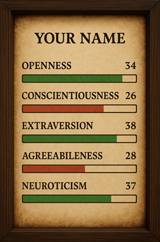

Scores are 0-50.
Use the following prompt to create an character card image based on your scores:
Create a digital RPG-style character card on parchment with a dark wooden frame. At the top, display the character's name (e.g., 'YOUR NAME') in bold serif font. Below, show five OCEAN personality traits as horizontal stat bars, each labelled with its name and numeric value out of 50. Each bar's fill width should be proportional to its value. Display the traits exactly as follows: - Openness: {{o-score}} - Conscientiousness: {{c-score}} - Extraversion: {{e-score}} - Agreeableness: {{a-score}} - Neuroticism: {{n-score}} Use bright green for GREEN bars and muted red for RED bars. Ensure all five bars are clearly visible, distinctly coloured, and proportionally scaled. Do not swap any colours.
